|
|
eCourts Portal of Western Australia - Help: eLodgment |

View Subpoenaed Items
View items or documents that have been uploaded in response to a subpoena, summons, request or letter. Items may only be viewed when the requisite access or leave has been provided by the relevant Court or Tribunal.
01. From the eCourts Portal Home Page, click My Current Matters.
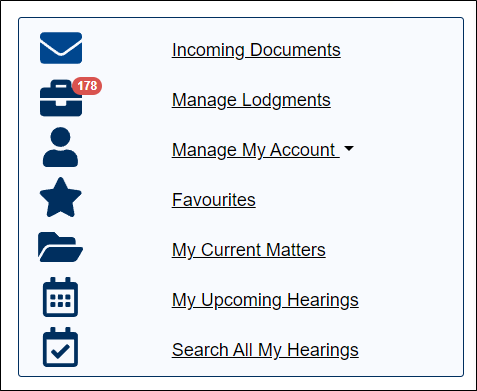
The Current Matters screen is loaded.
02. Click View on the relevant matter.
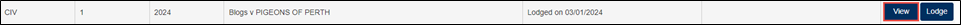
Matter details screen is displayed.
03. Click View Subpoenaed Items.
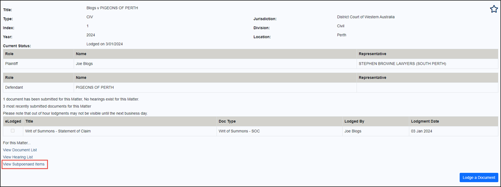
The Subpoenaed Items screen is loaded.
NOTE: Subpoenaed items will not be automatically loaded onto the screen to allow for a better user experience.
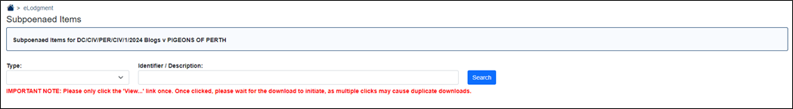
04. To search for subpoenaed item by addressee, enter the addressee name into the Identifier / Description field and click Search.
NOTE: If the Search button is clicked with nothing entered into the search bar, this will load ALL subpoenaed items lodged in the matter.
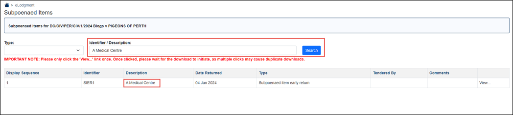
05. To search for a subpoenaed item by Type, select from the Type dropdown, then click Search.
NOTE: Subpoenaed item types will only display the types that have been submitted. i.e. if no subpoenaed items with the type of Subpoenaed Item Early Return (SIER) have been submitted, this will not appear on the Type dropdown.
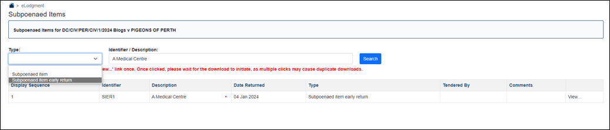
06. If access has been provided, click View.
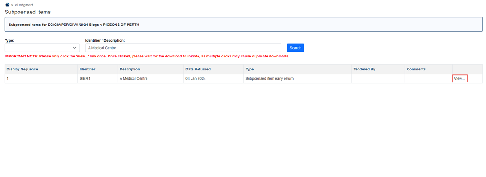
Upon clicking View, the attachments on the subpoenaed item will download on the top-right corner of the browser.
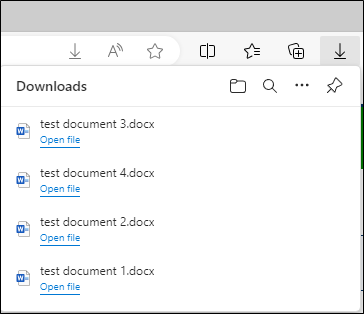
Note: To facilitate the user experience, it is recommended to only ‘View’ one subpoenaed item at a time as the number of attachments may range from 1 – 500.
07. If access has NOT been provided, clicking View will display the below error message:
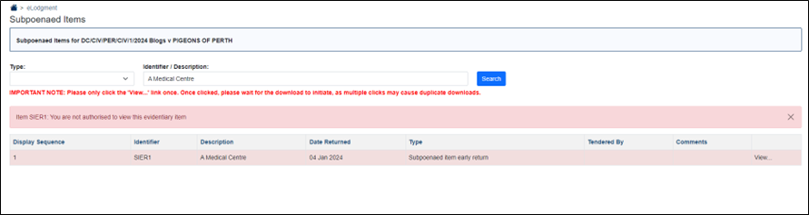
Please refer to the relevant Court or Tribunal’s Rules or Practice Directions to request access.
08. If an SI / SIER is returned, the word “Returned” is added to the end of the item’s description in brackets.
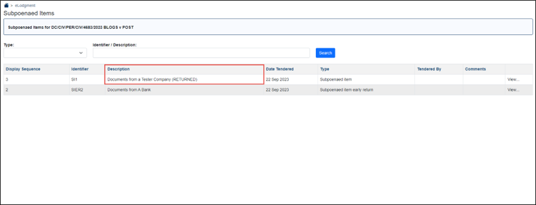
NOTE: If View is selected on a ‘Returned’ SI / SIER, the below validation message will appear:
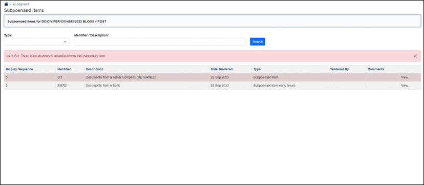